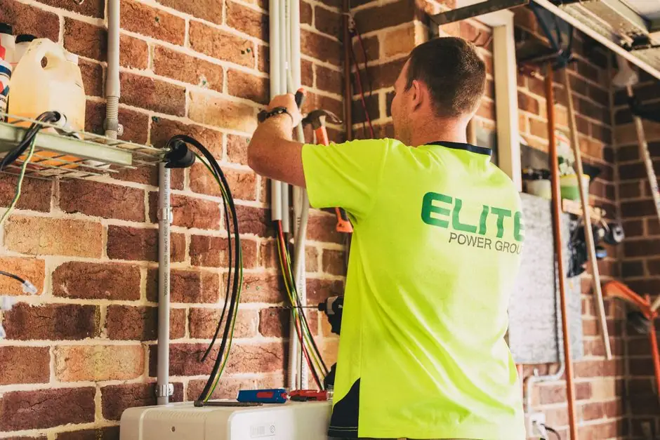
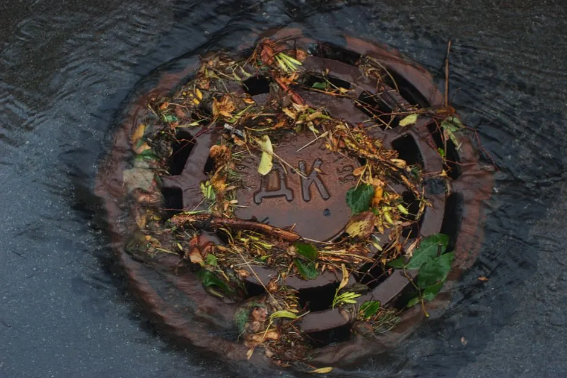
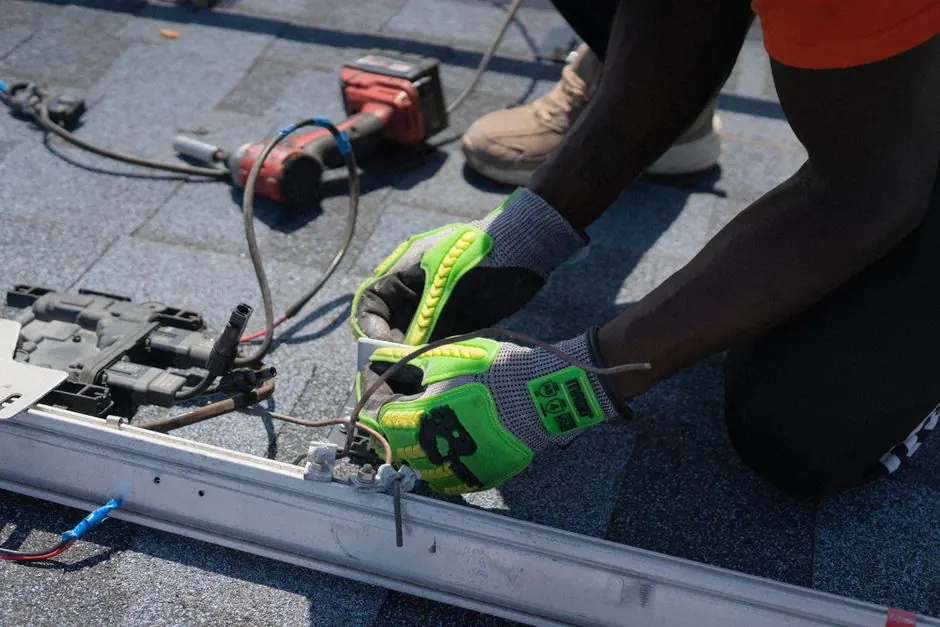

Expert drain snaking in Naples, Florida
Drain snaking in Naples, Florida is a vital service for homeowners dealing with stubborn clogs. Our Naples drain snaking services effectively clear blockages, restoring your plumbing system's efficiency. Don't let slow drains disrupt your life-act now!
Live dispatcherUpfront optionsBacked workmanship
What our drain snaking service includes
Our drain snaking service covers a comprehensive assessment and effective clog removal. Additional services, such as drain cleaning chemicals, may be recommended based on your specific needs.
Initial drain inspection
We perform a thorough inspection of your plumbing system to identify the cause of the blockage.
Professional drain snaking
Using high-quality tools, we effectively remove clogs and restore drainage flow.
Post-service inspection
After snaking, we conduct a follow-up inspection to ensure the blockage is fully cleared.
Maintenance recommendations
We provide tips to help you maintain your plumbing system and prevent future clogs.
What is drain snaking in Naples, Florida?
Drain snaking in Naples, Florida is a plumbing technique that uses a flexible auger, commonly known as a drain snake, to remove clogs from pipes. This method is effective for clearing blockages caused by hair, grease, or foreign objects lodged in your plumbing system.
Local Naples customers often face issues such as clogged drains due to the area's sandy soil and heavy rainfall, which can lead to debris accumulation. Our Naples drain snaking services provide quick solutions to restore drainage flow, ensuring your plumbing operates smoothly. For affordable drain snaking near me, trust our expertise.

How we workWe verify the cause, compare realistic options, and confirm the repair before we leave.
What to expect during drain snaking
The process flexes to the condition, but these checkpoints keep decisions clear.
Initial assessment
Our technician will begin with a thorough inspection of your plumbing system using a drain camera. This helps identify the cause and location of the blockage.
Preparation
Before beginning the snaking process, our team will prepare the work area, ensuring all necessary tools are on hand, including a plumbing auger and drain snake.
Snaking the drain
The technician will carefully insert the drain snake into the affected pipe, rotating it to break up and remove the clog. This process typically takes 30 minutes to an hour.
Post-service inspection
After snaking, a follow-up inspection will be conducted to ensure the blockage is cleared. This may include using a drain camera to confirm the results.
Maintenance tips
Once the service is complete, our technician will provide you with maintenance tips to prevent future clogs, helping keep your plumbing system in top shape.
Tools and methods for drain snaking
Purpose-built equipment, used by trained technicians, so the job is done accurately the first time.
Drain snake
Used for breaking up and removing clogs from pipes, ensuring effective drainage.
Plumbing auger
An essential tool for reaching deeper blockages that a standard snake may not clear.
Drain camera
Allows for thorough inspection of pipes to identify the exact location and cause of clogs.
Hydro jetter
Used for severe blockages, utilizing high-pressure water to clear stubborn debris.
When to use drain snaking
These examples show how the service framework adapts rather than forcing every call through one repair.
Bathroom drain overhaul
The bathroom drain was frequently clogged, leading to water standing for hours. → Post-service, the drain clears immediately, preventing water buildup and ensuring hygiene.
Toilet clog resolution
The toilet was backing up regularly, causing inconvenience and frustration. → After our drain snaking service, the toilet flushes smoothly without any issues.
Common problems solved by drain snaking
Drain snaking effectively addresses various plumbing issues that can disrupt your daily life.
Clogged kitchen sink causing backups
Our drain snaking service quickly clears the clog, restoring normal function and preventing further issues.
Slow bathtub drainage
We use drain snaking to remove hair and debris, ensuring your bathtub drains quickly and efficiently.
Frequent toilet clogs
Our drain snaking identifies and resolves the underlying cause, preventing future clogs and maintaining your plumbing system.
Drain snaking pricing in Naples
$180 - $450 depending on scope
Severity of the clog
More severe blockages may require additional time and tools, increasing the overall cost.
Location of the blockage
Clogs located deeper in the plumbing system may require specialized equipment, affecting pricing.
Accessibility of pipes
If pipes are difficult to access, it may take longer to complete the job, which can lead to higher costs.

What is drain snaking in Naples?
Drain snaking in Naples is a plumbing technique that uses a flexible auger to clear clogs in pipes, ensuring efficient drainage.
How does drain snaking work in Naples?
Drain snaking works by inserting a specialized tool, the drain snake, into the pipe. It breaks up and removes blockages, restoring water flow.
When should I use drain snaking in Naples?
You should use drain snaking when experiencing slow drains, frequent clogs, or backups, as it effectively clears stubborn blockages.
How much does drain snaking cost in Naples?
The cost of drain snaking in Naples typically ranges from $180 to $450, depending on the complexity of the clog and the required service.
Related Services

Need drain snaking in Naples, Florida?
Contact us today for prompt and professional drain snaking services. Our team is ready to help you with any plumbing issue.

Request drain snaking / cabling
We invite you to reach out for all your drain cleaning needs. Our team is available 24/7, and we respond quickly to all inquiries.